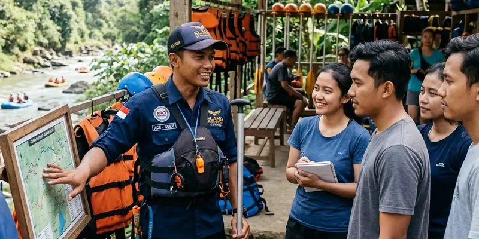

Sertifikasi guide rafting dapat dicek dengan menanyakan langsung lembaga pelatihan yang mengeluarkan sertifikat serta pengalaman guide dalam menangani jalur sungai yang akan dilalui wisatawan.
Ringkasan Inti
- Sertifikasi guide rafting menunjukkan kompetensi dasar dalam menangani situasi darurat di sungai
- Wisatawan berhak menanyakan bukti sertifikasi sebelum mengikuti kegiatan
- Guide tanpa sertifikasi berisiko kurang siap menghadapi kondisi sungai yang berubah mendadak
- Operator profesional umumnya terbuka menjelaskan kualifikasi guide yang bertugas
- Pengecekan sertifikasi menjadi bagian penting dari langkah pencegahan kecelakaan rafting
Apa Itu Sertifikasi Guide Rafting dan Mengapa Penting?
Sertifikasi guide rafting adalah bukti bahwa seorang pemandu telah mengikuti pelatihan resmi terkait teknik dasar arung jeram, penanganan darurat, dan prosedur keselamatan di sungai.
Sertifikasi ini penting karena menjadi indikator bahwa guide memiliki pemahaman dasar mengenai teknik mendayung, membaca kondisi arus, serta prosedur pertolongan pertama apabila terjadi insiden selama kegiatan berlangsung. Di Indonesia, pelatihan pemandu arung jeram umumnya berkaitan dengan program yang diselenggarakan oleh organisasi seperti Federasi Arung Jeram Indonesia atau FAJI, yang berperan dalam menetapkan standar kompetensi pemandu di berbagai daerah.
Tanpa sertifikasi yang memadai, kemampuan guide dalam menangani situasi darurat dapat menjadi tidak terukur, sehingga meningkatkan risiko bagi peserta apabila terjadi kondisi tak terduga di sungai.
Bagaimana Cara Menanyakan Sertifikasi kepada Operator Rafting?
Wisatawan dapat menanyakan sertifikasi guide rafting secara langsung kepada operator sebelum melakukan pemesanan, termasuk menanyakan lembaga pelatihan dan pengalaman guide di jalur sungai yang akan dilalui.
Beberapa pertanyaan yang dapat diajukan wisatawan kepada operator meliputi jenis pelatihan yang pernah diikuti guide, berapa lama pengalaman guide menangani jalur sungai tersebut, serta apakah operator memiliki dokumentasi sertifikat yang dapat ditunjukkan. Operator yang profesional umumnya tidak keberatan menjelaskan hal ini secara terbuka, karena transparansi mengenai kualifikasi guide juga menjadi bagian dari upaya membangun kepercayaan wisatawan.
Selain bertanya langsung, wisatawan juga dapat memperhatikan bagaimana guide menyampaikan briefing keselamatan, karena penjelasan yang runtut dan jelas biasanya mencerminkan tingkat pelatihan yang telah diikuti guide tersebut.

Diskusi terbuka mengenai prosedur keselamatan dengan guide atau pihak operator sangat disarankan sebelum Anda melakukan reservasi.
Apa Risiko Mengikuti Rafting dengan Guide Tanpa Sertifikasi?
Risiko mengikuti rafting dengan guide tanpa sertifikasi meliputi penanganan darurat yang kurang tepat, minimnya pemahaman terhadap kondisi sungai, serta potensi kesalahan dalam mengarahkan perahu saat menghadapi arus deras.
Guide tanpa pelatihan formal cenderung mengandalkan pengalaman pribadi tanpa dasar teknik yang terstandardisasi, sehingga responsnya terhadap situasi darurat dapat bervariasi dan kurang dapat diprediksi. Kondisi ini berpotensi memperbesar risiko cedera bagi peserta, terutama pada jalur sungai dengan tingkat kesulitan menengah hingga tinggi yang membutuhkan pengambilan keputusan cepat dan tepat dari pemandu.
Wisatawan yang mengutamakan keselamatan sebaiknya memastikan operator, seperti Gemilang Katun Outbound, dapat menjelaskan kualifikasi guide yang akan bertugas sebelum memutuskan mengikuti kegiatan rafting.
Kesimpulan
Mengecek sertifikasi guide rafting merupakan langkah penting yang sebaiknya dilakukan wisatawan sebelum mengikuti kegiatan arung jeram, mengingat kompetensi guide berperan besar dalam penanganan situasi darurat di sungai. Wisatawan disarankan aktif bertanya kepada operator mengenai kualifikasi guide dan tidak ragu memilih operator lain apabila informasi yang diberikan kurang transparan.
FAQ
Ketentuan mengenai kewajiban sertifikasi dapat bervariasi tergantung kebijakan daerah dan operator, sehingga wisatawan disarankan mengecek langsung kepada pihak penyelenggara.
Masa berlaku sertifikat dapat berbeda tergantung lembaga penerbit, sehingga informasi ini sebaiknya dikonfirmasi langsung kepada operator terkait.
Pengalaman dan sertifikasi sama-sama penting, karena sertifikasi menunjukkan dasar kompetensi sementara pengalaman menunjukkan kemampuan guide dalam menghadapi kondisi nyata di lapangan.